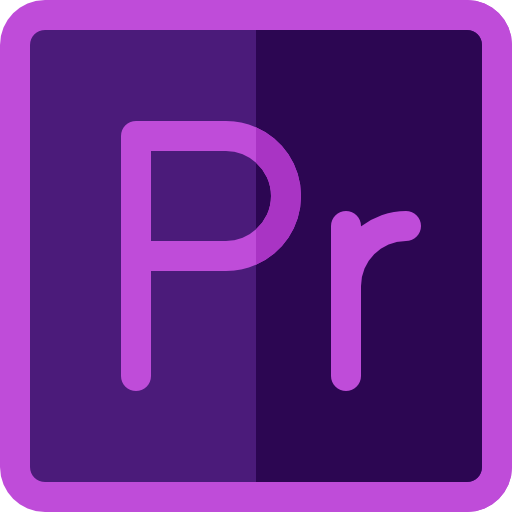

Adobe Premiere Pro is a timeline-based video editing software application developed by Adobe Systems and published as part of the Adobe Creative Cloud licensing program. First launched in 2003, Adobe Premiere Pro is a successor of Adobe Premiere (first launched in 1991). It is geared towards professional video editing, while its sibling, Adobe Premiere Elements, targets the consumer market.
CNN was an early adopter of Adobe Premiere. Also, in 2007, certain BBC departments adopted Premiere.It has been used to edit feature films, such as Deadpool, Gone Girl, Captain Abu Raed, and more recently Terminator Dark Fate and Monsters, and other venues such as Madonna's Confessions Tour.